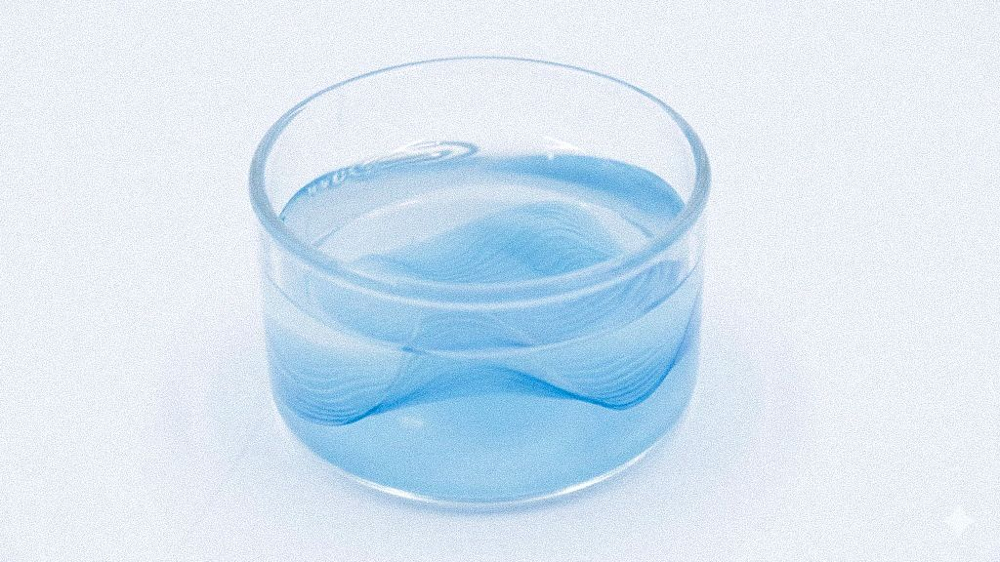

01
Simulation marine
Reconstitution d’un environnement marin à partir d’une recette inspirée des standards scientifiques. Les concentrations en sels ont été ajustées pour amplifier les interactions entre ions et bioplastiques, permettant d’observer rapidement des phénomènes de transformation.